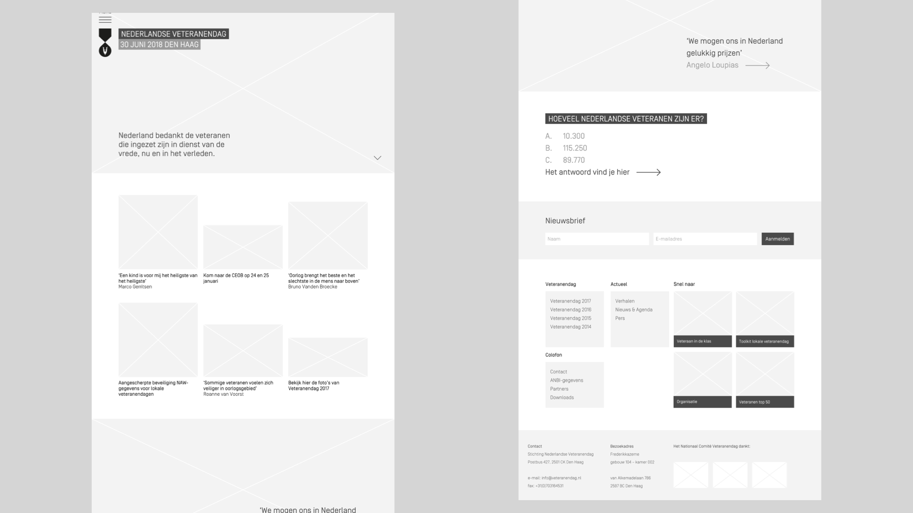
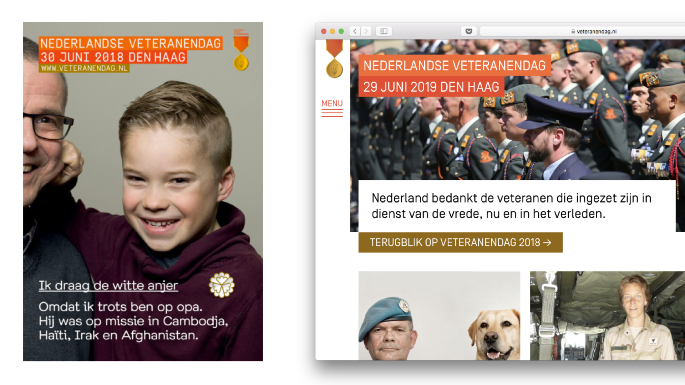

Every year, a new awareness campaign is made building up towards Veteran's Day, a yearly event honoring everyone who is and has been in military service. In 2017, along with a new campaign, a new website was necessary.
This is what the website looked like before:
Using wireframes, the homepage was rearranged. The homepage had to be restructured to give room to the campaign message every year but also consider veteran's war stories. These stories are an important tool to convey the importance of remembering their hard work, but also the traumas that comes with warfare.
The campaign provided visual elements that proved very usable for the new website. I reused the margins, colors and typeface of the campaign materials in the visual design of the website.
The website is online and can be seen on Veteranendag.nl.